class: center <br> # Spatial Analysis of Urban Data ## Lecture and Tutorial: Network Data Analysis [Bayi Li](mailto:barryli081@gmail.com) .toc-wrapper[ <div class="toc"> <a href="#dist" class="toc-item">Distance Measurements</a> <a href="#topo" class="toc-item">Topological Measurements</a> </div> ] --- ## Prerequisites of Plugins for Network Analysis <div align="center"> <figure> <p>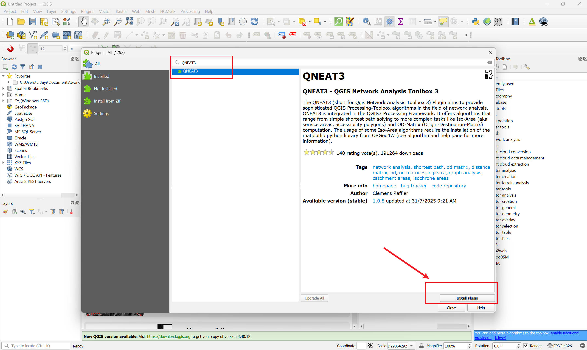</p> <figcaption>Installation of QNEAT3 Plugin (QGIS Network Analysis Toolbox).</figcaption> <figsubcaption>Source: https://root676.github.io/</figsubcaption> </figure> </div> --- The open-source and community-driven nature of QGIS leads to <u>multiple plugins for similar functions</u>. <div align="center"> <figure> <p>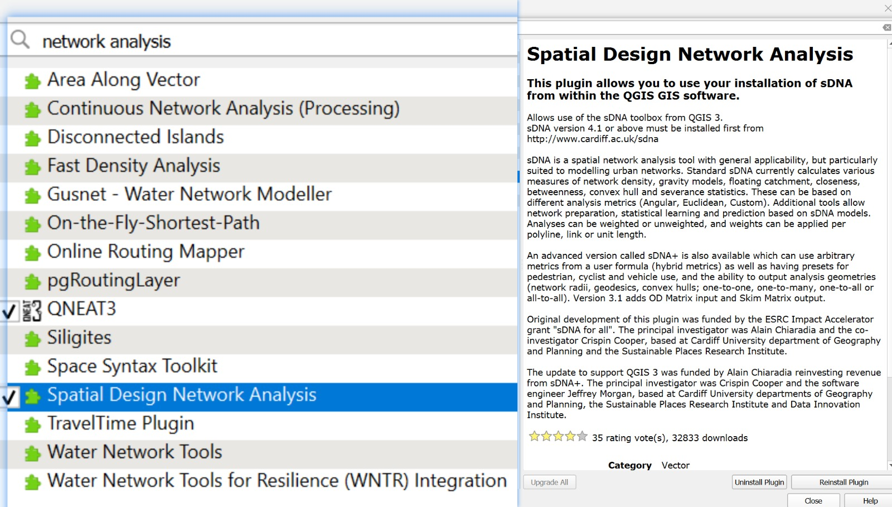</p> <figcaption>Installation of QNEAT3 Plugin (QGIS Network Analysis Toolbox 3).</figcaption> </figure> </div> No single **“best”** plugin exists for all cases: Each plugin is designed with different goals, data assumptions, and workflows. <xL>Having substitutes is practical</xL> Sometimes a plugin fails. In such cases, switching to an alternative plugin keeps your workflow moving. --- name: dist .right_half[ <figure> <img src="imgs/distance/different_type_distances.jpg" class="zoomable" width="100%"> <figcaption>List of available pulgins for network analysis in QGIS.</figcaption> <figsubcaption>Source: 10.1186/1476-072X-7-7</figsubcaption> </figure> ] ## Different Types of Distance - **Euclidean Distance** The <u>straight-line</u> distance between two points. - **Network-based Distance** - **Shortest network distance**: The smallest physical length <u>along the network</u>. - **Shortest network time**: Considers <u>realistic factors</u> such as speed limits, traffic conditions, and other attributes to estimate travel time. - **Manhattan Distance** The sum of absolute differences in coordinates. Common in <u>grid-based systems and certain analytical contexts</u>, though less used for real-world road routing. --- ### Euclidean Distance <div align="center"> <figure> <p>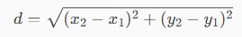</p> </figure> </div> <div align="center"> <figure> <img src="imgs/network/Euclidean_distance_2d_image.svg" alt="install_QNEAT3" width="50%"> </div> <xL>Always check the CRS.</xL> If the layer uses a geographic CRS, distances will be measured in **degrees, not meters**. --- .right_half[ <figure> <p>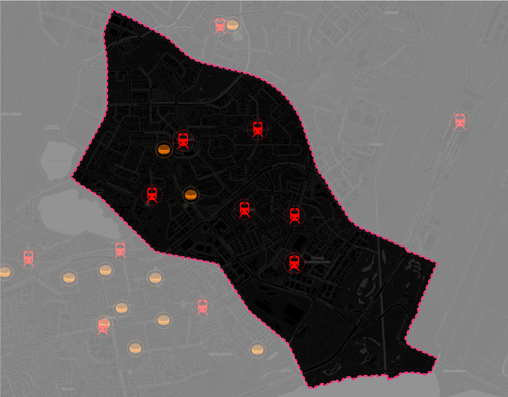</p> </figure> ] ### Euclidean Distance: Practice <xL>What is the spatial accessibility of hawker centres relative to MRT stations in Tampines?</xL> Data: 1. Hawker centre dataset 2. MRT stations (Including LRT as well) 3. Tampines Planning Boundary -- <xL>Given that we are only focusing on Tampines area? Should we crop out the data that outside the Tampines area?</xL> --- .right_half[ <figure> <p>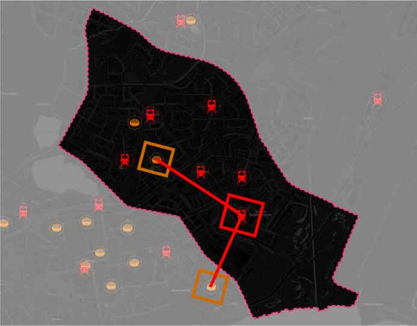</p> </figure> ] ### Edge Effect Distortions or inaccuracies that occur at the boundaries of your study area when performing spatial or network analyses. **How to Manage Edge Effects?** 1. Buffer Your Study Area: Instead of cropping exactly to the Tampines boundary, <u>create a buffer</u> (in this case, we choose a buffer size of 1000 metre) around it. 2. Interpret Results Carefully: Be cautious when interpreting results near the boundary. Highlight in your report or map legend that edge effects may influence these areas. 3. Document Your Method: Always state in your methodology <u>how you handled the edge effect</u> (e.g., “A 1 km buffer was applied to the Tampines boundary to minimise edge effects in the analysis”). --- ### Euclidean Distance: Practice <xL>What is the spatial accessibility of hawker centres relative to MRT stations in Tampines?</xL> .right_half[ <figure> <p>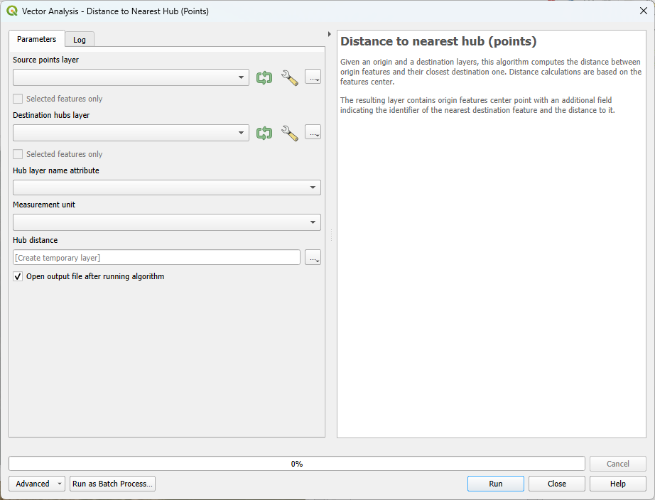</p> <figcaption>The Euclidean distance calculation tool of QGIS.</figcaption> </figure> ] - **Distance-based solution:** How close is the nearest hawker centre? - **Buffer-based solution:** How many hawker centres are accessible within a certain radius? --- ### Euclidean Distance: Practice <xL>What is the spatial accessibility of hawker centres relative to MRT stations in Tampines?</xL> .right_half[ <figure> <p>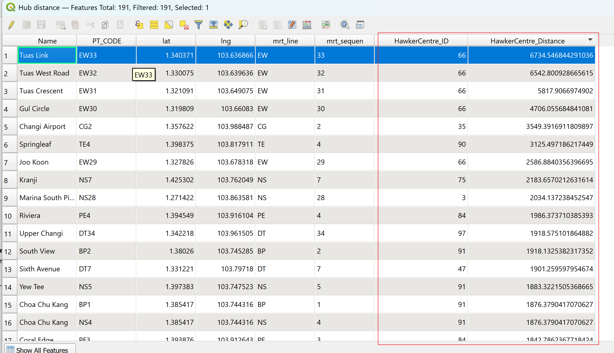</p> <figcaption>The Euclidean distance calculated output table of QGIS.</figcaption> </figure> ] - **Distance-based solution:** How close is the nearest hawker centre? - **Buffer-based solution:** How many hawker centres are accessible within a certain radius? -- <xL>Depending on how you approach the research question, you can even aggregate distance-based and buffer-based solutions to have a more comprehensive evaluation.</xL> --- ### Composite Accessibility index <div align="center"> <figure> <p>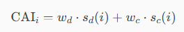</p> </figure> </div> two metrics per station: 1. sd(i): Nearest distance to a hawker centre (inverted so smaller distance → higher score). 2. sc(i): Hawker count within a fixed walking radius (e.g., 500 m; larger is better). Assign weights: 1. w_d = weight for distance score (e.g., 0.5) 2. w_c = weight for count score (e.g., 0.5) <xL>Based on the Composite Accessibility Index (CAI), which MRT stations have the lowest hawker centre accessibility, and how can this inform future hawker centre allocation?</xL> --- ### Using Network Distance to improve the accuracy <xL>Using `Tampines planning area` as an example, extract the road network data using the QuickOSM plyugin of QGIS.</xL> Be aware of the **Edge Effect**: <div align="center"> <figure> <p>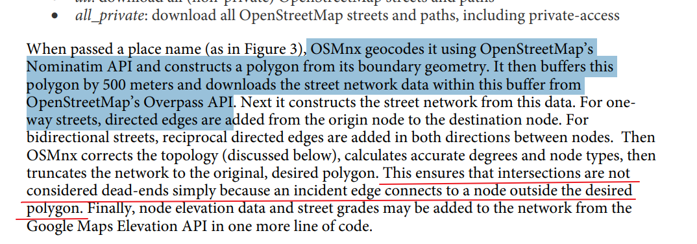</p> <figcaption>Download street network data after buffer the boundary geometry of place name.</figcaption> <figsubcaption>Source: https://arxiv.org/pdf/1611.01890</figsubcaption> </figure> </div> --- Prepare a network layer by downloading OSM roads using Quick OSM plugin -> Quick Query: 1. Key: `highway` *(This is the OSM tag for roads.)* 2. Value: Leave blank to get all roads. 3. Layer Extent: *Choose the Buffered Tampines Boundary layer* 4. **Keep the Geometry type:** `Line`. QuickOSM will download the data and add it as a new layer in your QGIS project. --- ### Network Data Cleaning OSM data includes many attributes (tags such as name, surface, lanes, maxspeed, etc.), which can make the dataset quite bulky. Keeping only the relevant fields helps to: 1. Reduces file size 2. Speeds up processing 3. Makes attribute tables cleaner .right_half[ <figure> <p>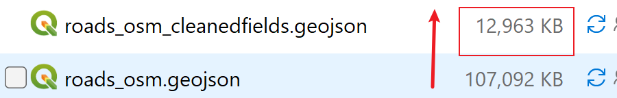</p> <figcaption>A significant size reduction after reduce the unneccesary fields.</figcaption> </figure> ] Let's keep the four fields: 1. highway (road type) 2. oneway (for directionality) 3. maxspeed (if available, for time-based cost) 4. lanes (capacity?) You should also keep the OSM ID (usually osm_id) when exporting or cleaning your road data. --- ### Network Distance: Practice From `Tampines MRT` to `The Hawker Centre @ Our Tampines Hub` Red line: Straight-Line Route Blue line: Network Route <div align="center"> <figure> <p>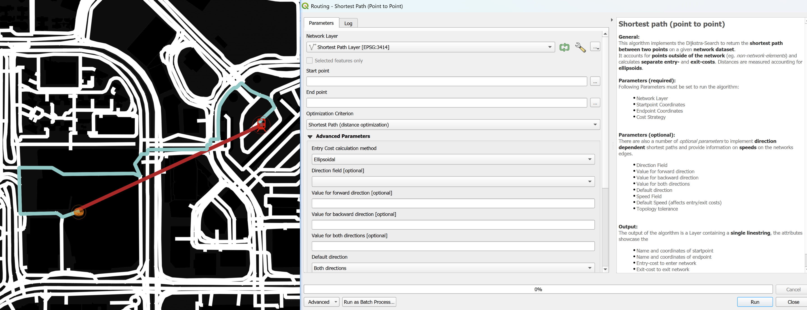</p> </div> --- ### Network Distance: Practice To calculate distances from each MRT station to each hawker centre in Tampines <div align="center"> <figure> <p>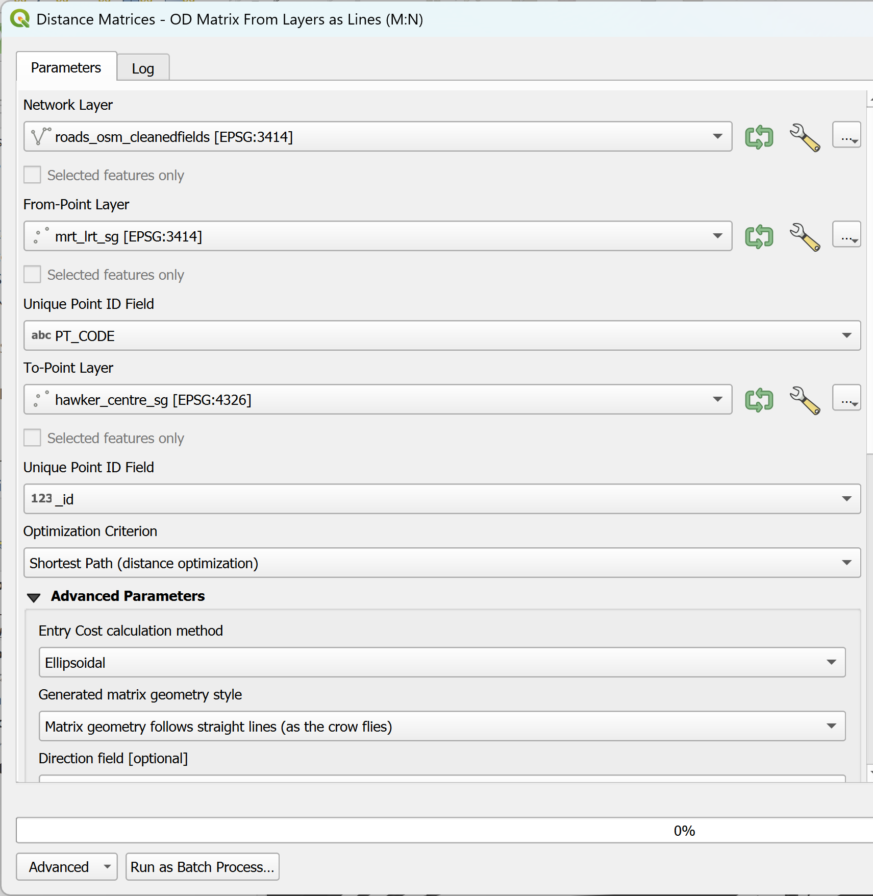</p> </div> --- ### Network Distance: Compared with Euclidean Distance The Euclidean (straight-line) distance almost always underestimates the real-world (network) distance, and the size of this underestimation—the “distance decay” or “detour index”—can vary significantly from one point pair to another. <div align="center"> <figure> <p>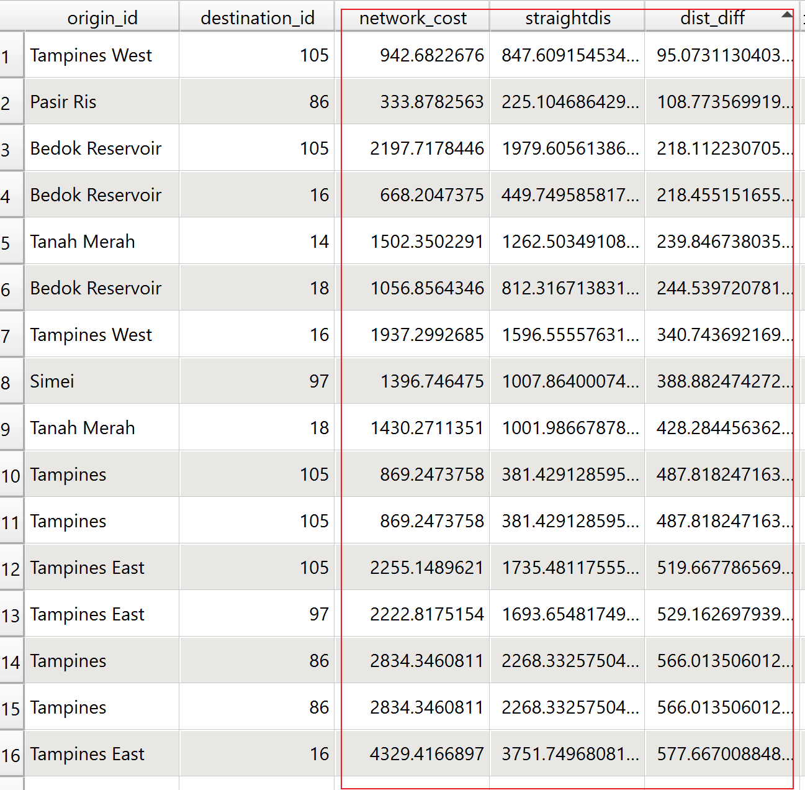</p> </div> --- name: topo .right_half[ <figure> <p>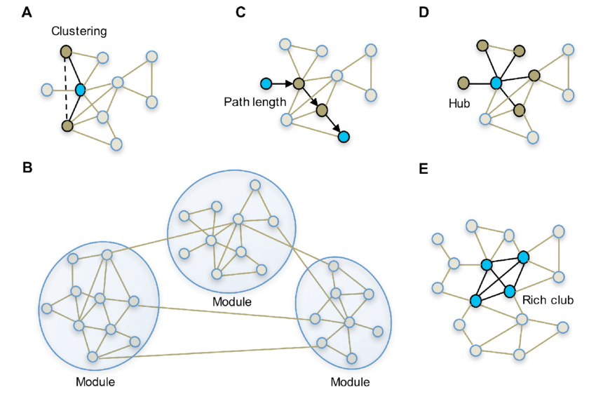</p> <figsubcaption>Source: 10.21035/ijcnmh.2017.4(Suppl.3).S03</figsubcaption> </figure> ] ## Topological Measurements ### Definition Topological measurements are **quantitative metrics** used to describe the structure, connectivity, and properties of a network (such as a road network, social network, or utility grid) based solely on how nodes (points) and edges (connections) are arranged—regardless of their physical distances or geographic positions. These measurements help us understand: 1. How well connected the network is 2. Which nodes or links are most important 3. The efficiency and robustness of the network --- ## Main Topological Measurements of a Network ### Density (Global) - Definition: The ratio of actual connections to all possible connections in the network. - Interpretation: Higher density means a more interconnected network. <div align="center"> <figure> <p>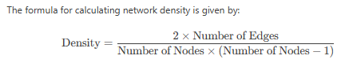</p> <figsubcaption>Source: https://www.numberanalytics.com/blog/mastering-network-density-in-social-network-analysis</figsubcaption> </div> | Density Range | Interpretation | |---------------|---------------------------------------------| | 0 - 0.3 | Low density, sparse | | 0.3 - 0.6 | Moderate density, relatively connected | | 0.6 - 1 | High density, highly connected | --- ## Main Topological Measurements of a Network .right_half[ <figure> <p>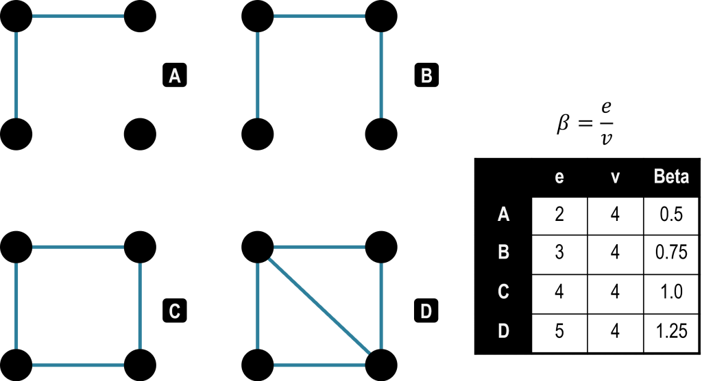</p> <figcaption>Beta Index in Graph.</figcaption> <figsubcaption>Source: https://transportgeography.org/contents/methods/graph-theory-measures-indices/beta-index-graph/</figsubcaption> </figure> ] ### Connectivity (Beta Index, Global) - Definition: It expresses the average number of links (edges) per node (vertex) in a network. - Interpretation: Indicates the average number of links per node. Values above 1 suggest a more connected network. <div align="center"> <figure> <p>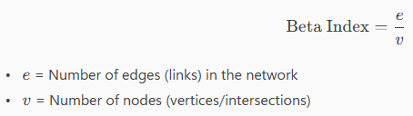</p> </div> --- ## Main Topological Measurements of a Network ### Average Path Length (Global) - Definition: The mean lengths between the shortest paths of all pairs of vertices in the network. - Interpretation: Indicates the overall efficiency of movement in the network. <div align="center"> <figure> <p>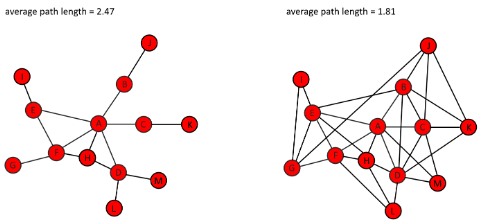</p> <figsubcaption>Source: https://rpubs.com/odenipinedo/network-analysis-in-R</figsubcaption> </div> --- ## Main Topological Measurements of a Network ### Node Degree (Local) - Definition: It quantifies the number of direct connections, or edges, a node (vertex) has within a graph or network. It is the number of edges attached to a node. - Interpretation: High-degree nodes are major junctions or hubs; low-degree nodes are dead-ends or simple intersections. <div align="center"> <figure> <p>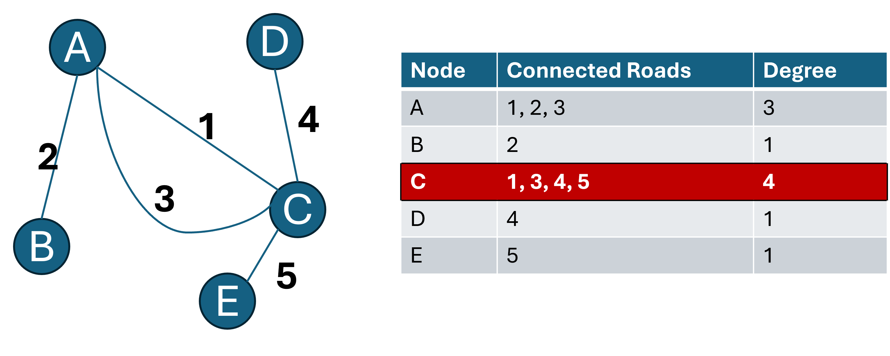</p> </div> --- .right_half[ <figure> <p>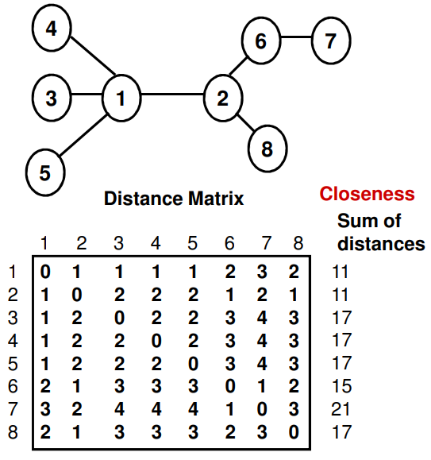</p> <figsubcaption>Source: https://www.jsums.edu/nmeghanathan/files/2015/08/CSC641-Fall2015-Module-2-Centrality-Measures.pdf.</figsubcaption> </figure> ] ## Main Topological Measurements of a Network ### Closeness Centrality (Local) - Definition: The inverse of the sum of the shortest path distances from a node to all other nodes. - Interpretation: Nodes with high closeness are centrally located and can reach all others quickly. <div align="center"> <figure> <p>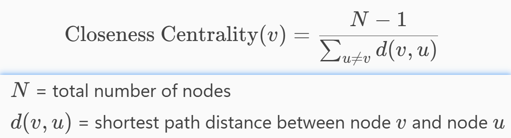</p> </figure> </div> --- ## Main Topological Measurements of a Network ### Betweenness Centrality (Local) - Definition: The number of shortest paths that pass through a node or edge. - Interpretation: Nodes/edges with high betweenness are critical for movement and act as “bridges” or bottlenecks. <div align="center"> <figure> <p>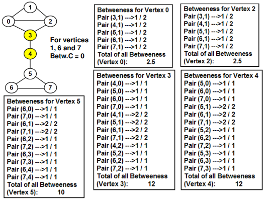</p> <figsubcaption>Source: https://www.jsums.edu/nmeghanathan/files/2015/08/CSC641-Fall2015-Module-2-Centrality-Measures.pdf</figsubcaption> </figure> </div> --- | **Measure** | **What It Describes** | **What It Tells You** | | ----------------------------- | -------------------------------------------------------------------------------- | ------------------------------------------------------------------------------------- | | **Density** | How full the network is compared with the maximum number of links it could have. | Shows **how connected the network is**. A dense network has many alternative routes. | | === | === | === | | **Connectivity (Beta Index)** | The ratio of edges to nodes. | Indicates general network connectedness. Higher values show **more links for each node**. | | === | === | === | | **Average Path Length** | The average number of steps needed to travel between all pairs of nodes. | Reflects network efficiency. Lower values mean **shorter, more direct routes**. | | === | === | === | | **Node Degree** | The number of edges linked to a node. | Highlights local importance. High-degree nodes act as **local hubs**. | | === | === | === | | **Closeness Centrality** | How close a node is to all other nodes. | Measures **accessibility**. High values mean a node can reach others with few steps. | | === | === | === | | **Betweenness Centrality** | How often a node lies on shortest paths between other nodes. | Shows control over flow. High-betweenness nodes act as **bridges or bottlenecks**. | --- | Measure | Example Research Question | | ----------------------------- | -------------------------------------------------------------------------------- | | **Density** | How does street-network density vary across neighbourhoods, and how does this variation relate to differences in walking rates? | | === | === | | **Connectivity (Beta Index)** | How does the beta index of local street networks influence route choice for short urban trips? | | === | === | | **Average Path Length** | How does the average path length of a city’s street network affect travel times between key public facilities? | | === | === | | **Node Degree** | How do high-degree junctions shape traffic flow and local congestion patterns in dense urban areas? | | === | === | | **Closeness Centrality** | How does the closeness centrality of street junctions relate to access to shops, parks, and public transport stops? | | === | === | | **Betweenness Centrality** | How do nodes with high betweenness centrality contribute to bottlenecks and vulnerability in the urban street network? | --- .right_half[ <figure> <img src="imgs/network/available_tools_in_QGIS.png " width="50%"> </figure> ] ### Network Topological Measuring Tools in QGIS There are multiple tools provided by GRASS built into QGIS | **Tool** | **Description** | |-----------------------|-------------------------------------------------------------------------------| | `d.path` | Finds shortest path for selected starting and ending node. | | `v.net.alloc` | Allocates subnets for nearest centres. | | `v.net.centrality` | Computes degree, centrality, betweenness, closeness and eigenvector metrics. | | `v.net.connectivity` | Computes vertex connectivity between two sets of nodes in the network. | **You may refer https://grass.osgeo.org/grass-stable/manuals/topic_network.html for more detailed instructions for more tools** --- ### Addition: How to get a clean network .right_half[ <figure> <img src="imgs/network/different_types_network.jpg " class="zoomable" width="100%"> <figcaption>A fully connected vs. an unconnected graph.</figcaption> <figsubcaption>Source: walkenho.github.io/graph-theory-and-networkX-part2/</figsubcaption> </figure> ] Network analysis has relatively high requirements for data quality. 1. Not snapped at intersections or minor gaps between roads might cause fail or unrealistic paths. 2. Shortest network time requires more detailed informtion on fields like oneway, maxspeed, and length. 3. Disconnected subgraphs make some hubs **unreachable** --- ### Further Cleaning: Understand OSM Roads OSM splits a road into separate “ways” (line features) <u>whenever any attribute (tag) changes</u>. For example, if the road surface changes from asphalt to gravel, or the speed limit, number of lanes, lighting, or even the name changes, a new segment is created at that point. <div align="center"> <figure> <p>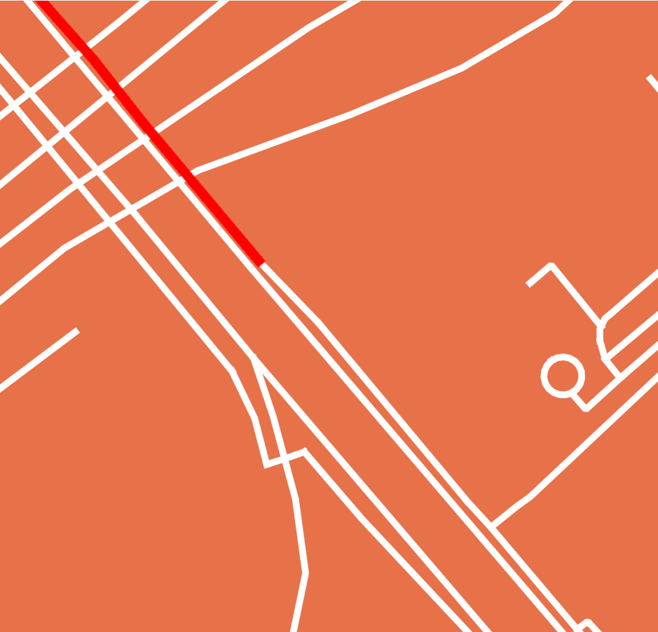</p> <figcaption>Segmented OSM Roads.</figcaption> </figure> </div> --- .right_half[ <figure> <img src="imgs/network/vclean_topolpgychecker.png " class="zoomable" width="100%"> <figcaption>v.clean tool interface.</figcaption> <figsubcaption>Source: https://grass.osgeo.org/grass-stable/manuals/v.clean.html</figsubcaption> </figure> ] ### v.clean: Toolset for cleaning topology v.clean is a GRASS GIS tool designed to clean and correct vector data, especially line such as road networks. It helps ensure your data is topologically correct—meaning <u>all lines connect properly, there are no unwanted overlaps, gaps, or duplicates, and the geometry is suitable</u> for network analysis. --- .right_half[ <figure> <img src="imgs/network/break_comparison.gif " width="40%"> <figcaption>Comparison of before and after using the break function.</figcaption> </figure> ] ### v.clean: Toolset for cleaning topology You can apply one or more of these common cleaning operations in sequence: | Function | What it does | Typical Use Case | | -------- | ---------------------------------- | -------------------------------- | | break | Splits lines at intersections | Ensuring all roads connect | | snap | Connects nearly-touching endpoints | Fixing small misalignments | | rmdupl | Removes duplicate lines | Cleaning up overlapping features | | rmdangle | Removes small, unconnected stubs | Removing accidental “tails” | | prune | Removes small bends/spikes | Smoothing geometry | Cleaning OSM roads is not always mandatory. It depends on your research questions and the intended analysis. The choice of cleaning functions should be tailored to your specific needs. --- .right_half[ <figure> <p>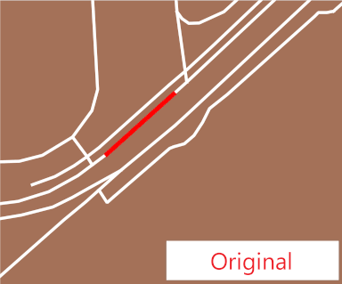</p> </figure> ] ### Workflow to get a clean typological network 1. Dissolve all lines into a single multipart geometry (Vector → Geoprocessing Tools → Dissolve, no dissolve field) 2. v.clean → break (Splits at intersections to produce true nodes) 3. Continue with v.net.* tools. <xL>It will lose the attributes. If you wish to maintain the attributes, it requires extra cleanning process.</xL> Use `v.to.points` to generate nodes. --- .right_half[ <figure> <p>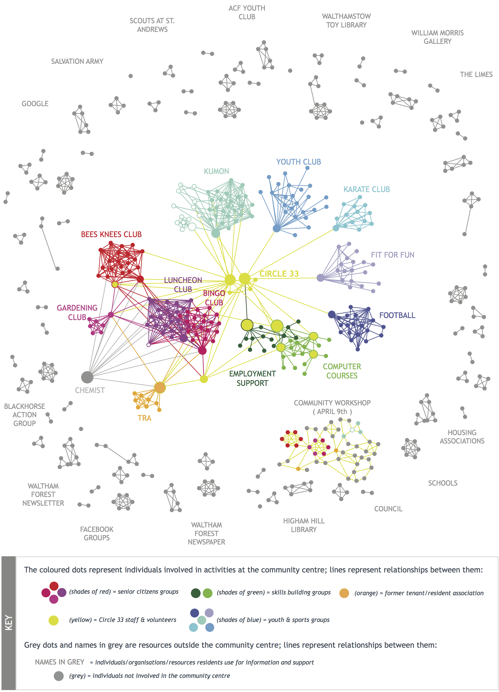</p> <figcaption>Community Identification through social network analysis.</figcaption> <figsubcaption>Source: https://www.social-life.co/media/files/PrioryCourt_Final.pdf.</figsubcaption> </figure> ] ## Social Network Analysis - Community Identification --- ## Social Network Analysis - Family Tree Data Source: https://github.com/chsshgis/Singapore-Biographical-Database <div align="center"> <figure> <p>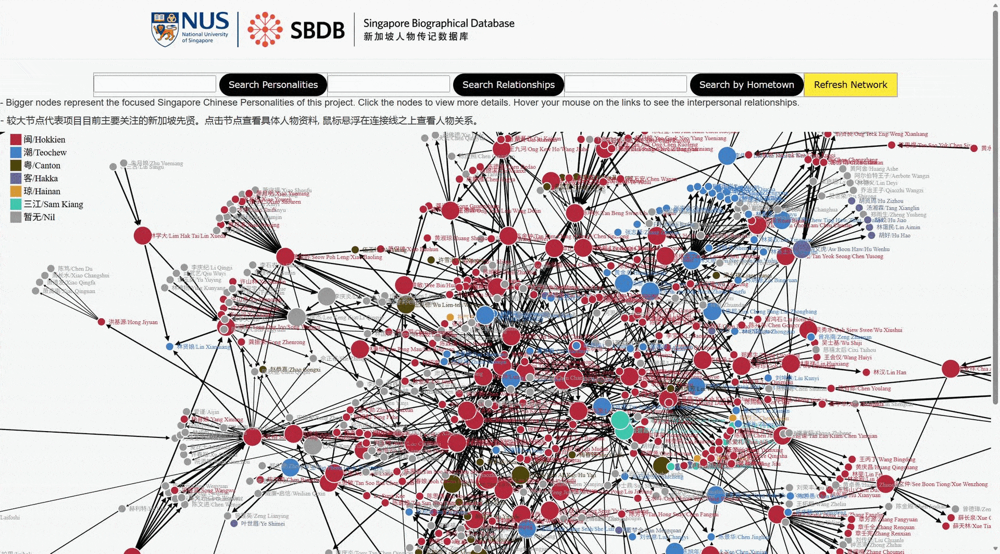</p> <figcaption>Interactive visualisation of Singapore's biographical data.</figcaption> <figsubcaption>Source: https://sbdb.nus.edu.sg/Network20Selected/index.html.</figsubcaption> </figure> </div> --- ## Bibliometric Network Analysis <div align="center"> <figure> <p>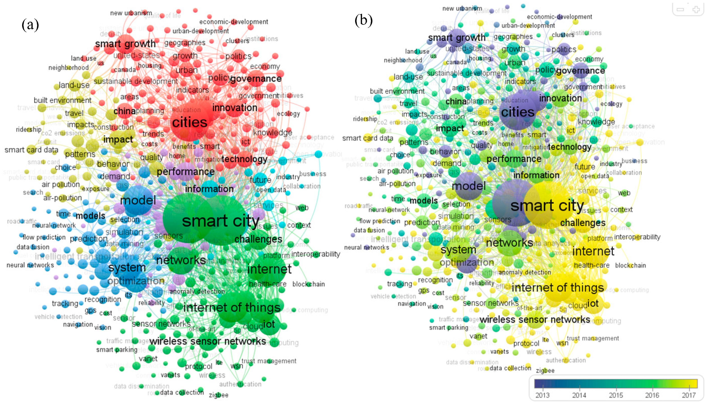</p> <figcaption>Co-keyword network visualization on smart cities research. Note: (a) co-keyword network visualization was based on occurrences; (b) co-keyword overlay visualization was based on the occurrences and average publication per year scores.</figcaption> <figsubcaption>Source: https://doi.org/10.3390/su11133606.</figsubcaption> </figure> </div> --- ## Practice: Topological Measurement Analysis <xL>Could you give a comprehensive assessment on the network connectivity and efficiency on public transportation network of Singapore?</xL>